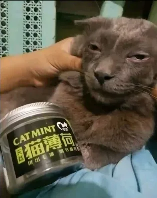
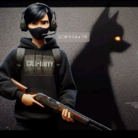
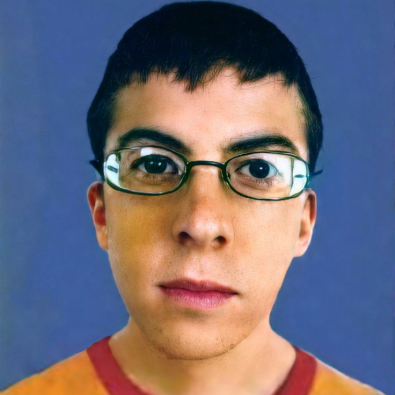
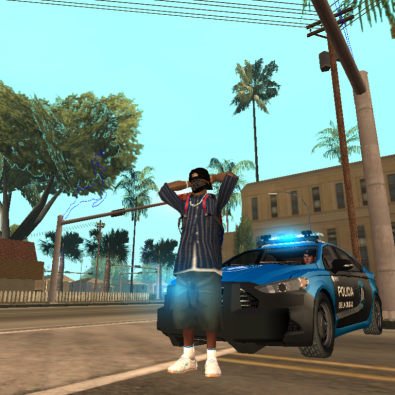

CDM símbolo de la supremacía en los oscuros callejones de la Ciudad de los Santos.
El Cartel Dual Medellín, conocido como CDM, se erige como uno de los carteles más formidables y reconocidas en
la intrincada red del crimen organizado. Con sus iniciales marcadas en el tejido de la ciudad, este cartel
representa una amalgama de influencia, riqueza y poder militar.
El CDM es una fuerza imparable en el mundo del narcotráfico y más allá. Su especialidad
reside en la exportación de sustancias alucinógenas a los europa, un mercado en el que han alcanzado una
posición de dominio indiscutible. Sin embargo, nuestro alcance se extiende más allá de lo convencional,
participando en actividades ilícitas que incluyen el tráfico de armas a por mayor, secuestro, extorsión y
asesinato.
Poderío
Con una capacidad militar imponente y un poder económico formidable, el CDM se ha erigido como uno de los
carteles más destacados de la Ciudad de los Santos, extendiendo su dominio sobre una amplia red de territorios
en el suroeste. Su presencia es innegable, infundiendo temor y respeto en igual medida entre aquellos que se
encuentran en su camino.
Personas Importantes
Fundador

Sebatian Orozco
Jefes
Juan Marin

Alejandro Marim

Mateo Montoya
Sub Jefes

Alex Ferreyra
Jose Ramos
Alianzas Actuales
Cartel De Tijuana Nueva Generación
Cadena: CTNG
el Cartel de Tijuana Nueva Generación (CTNG) es una organización poderosa con raíces en México, especializada en el tráfico de drogas y la violencia controlada. Su presencia en Los Santos ha desafiado la autoridad de otras facciones, estableciendo una reputación temible y una red de influencia que se extiende por toda la ciudad.
Golden South Corona
Cadena: GSC
La Golden South Corona (GSC) es una dinastía criminal arraigada en los barrios del sur de Los Santos, conocida por su astucia y poderío. Originarios de la ciudad, controlan una amplia gama de actividades ilegales, desde el contrabando hasta el lavado de dinero, consolidando su influencia en el inframundo de la ciudad.
North Crime Family
Cadena: NCF
La North Crime Family (NCF) es una poderosa dinastía criminal en los barrios del norte de Los Santos, conocida por su ferocidad y lealtad. Originarios de Irlanda, controlan diversas actividades ilegales con astucia y determinación, consolidando su influencia en el inframundo de la ciudad.
Actividades
Reclutamiento
El reclutamiento es esencial porque beneficia tanto a los individuos como a sus familias. Cada nuevo miembro reclutado puede significar ganancias de hasta 30k, lo que fortalece la posición financiera del reclutador. Además, al aumentar el número de miembros en una familia, se facilita el crecimiento y la expansión, lo que les permite conquistar nuevos territorios de manera más efectiva. En resumen, el reclutamiento es una actividad clave para el desarrollo tanto a nivel individual como familiar.
Conquistas
La actividad de conquista es altamente beneficiosa, ya que permite un crecimiento significativo en términos de territorios para la familia. Además, durante estas expediciones, se suelen distribuir armas, dinero y otros recursos entre los miembros, quienes tienen la libertad de conservarlos. Participar activamente en las conquistas no solo facilita la expansión territorial, sino que también es una excelente manera de ascender de nivel dentro de la familia, siempre y cuando se asista a la mayoría de las expediciones.
Robos
Los robos suelen ser acciones llevadas a cabo entre los miembros en lugar de ser organizadas por la familia en su conjunto. Sin embargo, en algunas ocasiones, los líderes pueden organizar actividades de robo que involucran la distribución de armas y dinero. Estas acciones son beneficiosas para conocer mejor a todos los miembros de la familia, ya que el acto de robar es popular entre ellos.
Secuestro
Los secuestros son actividades que raramente se llevan a cabo debido a su alto riesgo. Sin embargo, en ocasiones excepcionales, algunos miembros pueden optar por realizarlos. Sin embargo, es importante destacar que no son acciones organizadas por la familia en su conjunto, sino más bien decisiones individuales de los miembros.